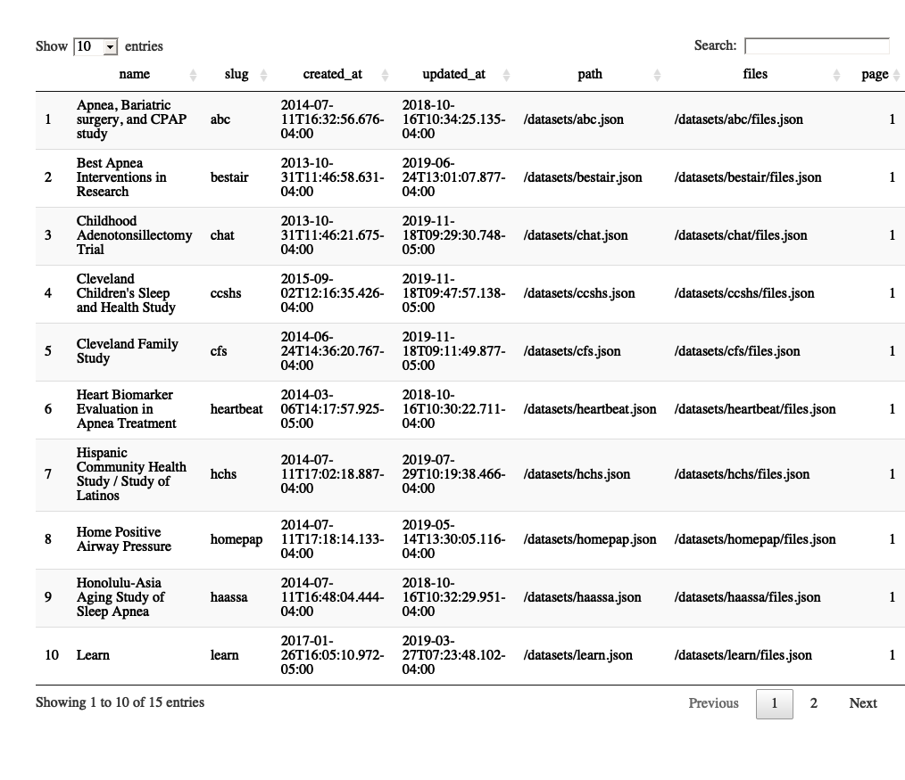

nsrr
The goal of nsrr is to allow users to access data from the National Sleep Research Resource (’NSRR’) (https://sleepdata.org/) through an R interface.
Why R? Many packages in R can read and process accelerometry, such as the GGIR, ActivityIndex, and accelerometry; other packages such as edfReader can read in EDF data for polysomnography data. Also, the xml2 package can easily read in XML annotations into R. We believe the interplay with these packages, amongst others, allow for a flexible framework to download, process, and visualize data. The nsrr package is simply the entry point into navigating the files available and downloading the data.
Token
To retrieve your NSRR token, go to https://sleepdata.org/dashboard, and sign in. This token will allow you access to any data sets you have requested access to. If you do not have access, then it will allow you to download files that are publicly available.
Set the token by adding this to your ~/.Renviron file:
NSRR_TOKEN="YOUR TOKEN GOES HERE"The token is accessible via token = Sys.getenv("NSRR_TOKEN"). Each nsrr function also has the argument token to pass through if you do not wish to set it.
To determine if you are authenticated, you can use:
Examples
NSRR data sets
Here is how you can access the NSRR datasets list:
library(nsrr)
df = nsrr_datasets()
DT::datatable(df)
NSRR data set files
Here we first get a list of the files in the datasets sub-directory from the shhs data set:
df = nsrr_dataset_files("shhs", path = "datasets")
head(df)
dataset full_path folder
1 shhs datasets/archive datasets/
2 shhs datasets/hrv-analysis datasets/
3 shhs datasets/CHANGELOG.md datasets/
4 shhs datasets/KNOWNISSUES.md datasets/
5 shhs datasets/shhs1-dataset-0.15.0.csv datasets/
6 shhs datasets/shhs2-dataset-0.15.0.csv datasets/
file_name is_file file_size
1 archive FALSE 0
2 hrv-analysis FALSE 0
3 CHANGELOG.md TRUE 11010
4 KNOWNISSUES.md TRUE 11421
5 shhs1-dataset-0.15.0.csv TRUE 24322962
6 shhs2-dataset-0.15.0.csv TRUE 11897377
file_checksum_md5 archived
1 <NA> FALSE
2 <NA> FALSE
3 69bb54a32cdfc7bdddc13276b7c858c1 FALSE
4 8598129123baa60e16977dc24aa780af FALSE
5 3f26d37ec97e2bc88776850a31715398 FALSE
6 21807d854010f036fd0d4f006eeed49d FALSEDownloading NSRR data set files
We can then download the CHANGELOG.md file as it’s publicly accessible.
url = nsrr_download_url("shhs", path = "datasets/CHANGELOG.md")
# print URL
dl = nsrr_download_file("shhs", path = "datasets/CHANGELOG.md")
dl$outfile
[1] "/var/folders/1s/wrtqcpxn685_zk570bnx9_rr0000gr/T//RtmpJUlkmk/filea17e12cd407.md"
cat(head(readLines(dl$outfile)), sep = "\n")
## 0.15.0 (November 18, 2019)
- Remove EEG spectral summary variables
- Add notes to height and weight varibles about top and bottom coding
- The CSV datasets generated from a SAS export are located here:
- `\\rfawin\bwh-sleepepi-shhs\nsrr-prep\_releases\0.15.0\`Listing All NSRR data set files
To list all the files, recursively, you would run:
nsrr_all_dataset_files("shhs")but it may take some time.
EDF files
The edfReader can read in EDF fields for polysomnography data. Work in Progress - need access to EDF data.
files = nsrr_dataset_files("shhs", path= "polysomnography/edfs/shhs1")
dl = nsrr_download_file("shhs", path = "polysomnography/edfs/shhs1/shhs1-200001.edf")